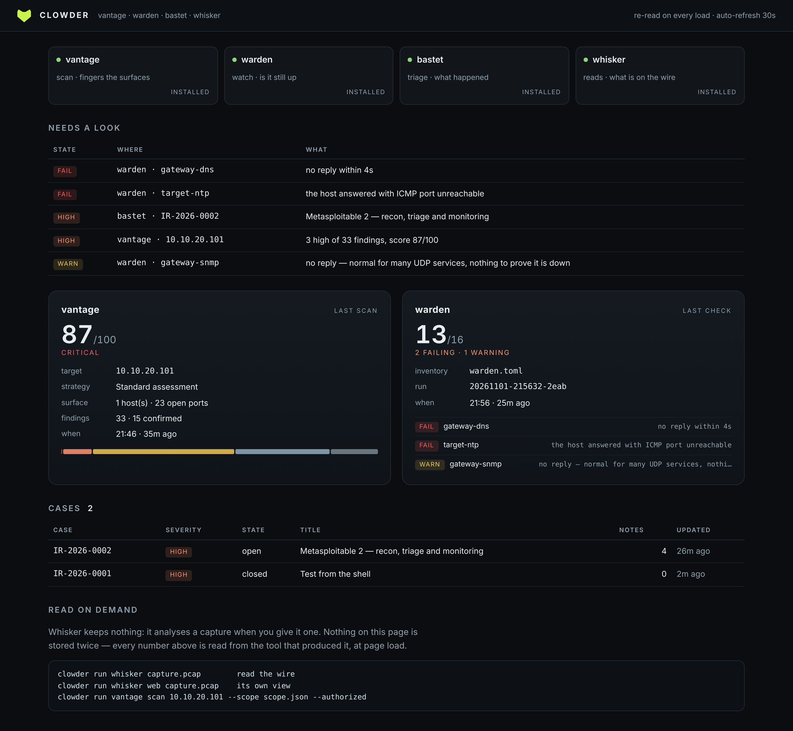
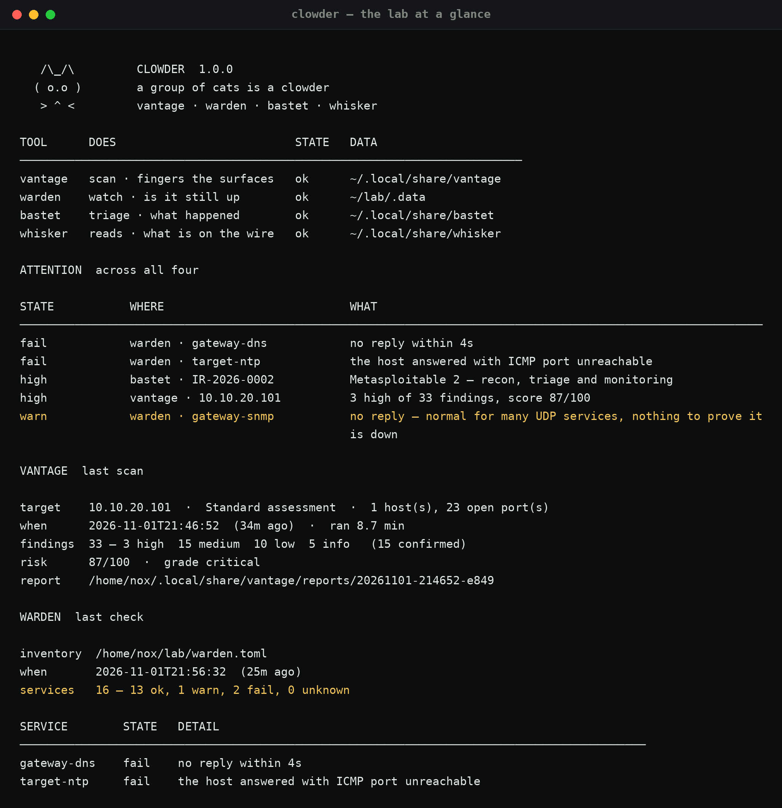

01Four good tools, one bad morning
Vantage tells me what a host exposes. Warden tells me whether the services I care about are up. Bastet holds the cases and the timeline. Whisker reads a capture when something looks odd. Each one is useful on its own, and together they were the reason I opened four terminals before knowing whether anything was actually wrong.

02The rule that keeps it honest
The obvious way to build this is to import the other three packages and call their functions. That is also how you end up with two implementations of a risk score: the tested one inside Vantage, and the convenient one in the dashboard that nobody wrote tests for and that slowly becomes the number you quote.
So Clowder reads files instead. report.json from the
last scan, the newest row in Warden's runs table with
its checks beside it, the open cases in Bastet's
cases.db. No imports, no recomputation, nothing cached
server-side — the page re-reads the stores on every load, so it cannot disagree
with what the tools report.
03One scale for two vocabularies
The genuinely new thing is the attention list, and it needed a decision: a scanner talks in severities, a checker talks in health. Ranking them on one scale is a judgement, so it is written down once and quoted everywhere:
critical a confirmed critical finding — someone can walk in fail a service that is supposed to be up is not high/warn a high finding, or a service that answered badly medium a medium finding low worth knowing, not worth waking up for
A critical finding outranks an outage because the finding means the box is
reachable by someone else, which is worse than me noticing a dead port. That
ranking lives in one dictionary in config.py — the
first version had two copies of it, and the tests caught them drifting apart
within the hour.
04The passthrough is a contract
For real work the console gets out of the way: clowder warden
check execs ./warden check with the same argv,
in the tool's own directory, and returns the tool's exit code unchanged.
$ clowder warden check … the tool's own output … $ echo $? 4 # warden's "a check failed", not clowder's
That matters more than it sounds: exit codes are the interface scripts use, and a
wrapper that normalises them quietly breaks every cron job that depended on
`--fail-on`. There is a test that runs an actual shell script with
exit 7 and asserts the console returns 7.

05Testing against other people's schemas
The interesting failure mode is not "my code is wrong", it is "their database
changed". So the tests build real SQLite files with the exact schemas the tools
use — and then two more: one with an older, thinner schema, and one
report.json cut off mid-write. Both must produce a
line under doctor, never a traceback. A console you
open because something is broken is the last thing that should crash.
Thirty tests, no network, no fixtures checked in: every database is created in a
temp directory with the same CREATE TABLE statements
the tools run.
06What it refuses to do
- It does not install anything. Tools are found on
PATH, then in~/projects, then reported asmissing. No silent pip. - It does not own a judgement. No severity, no score, no health verdict is computed here.
- It does not hide whisker's absence. Whisker stores nothing — it analyses a capture on demand — so its panel says exactly that instead of inventing a "last run".
- It does not copy data. Three stores, read directly, opened read-only at the SQLite level.
github.com/Noxwer-beep/clowder
— pip install "clowder[ui]", then
clowder. It gathers
Vantage,
Warden,
Bastet and
Whisker.